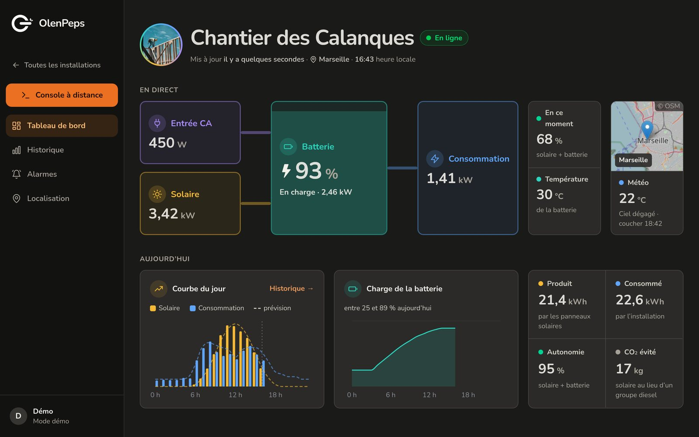
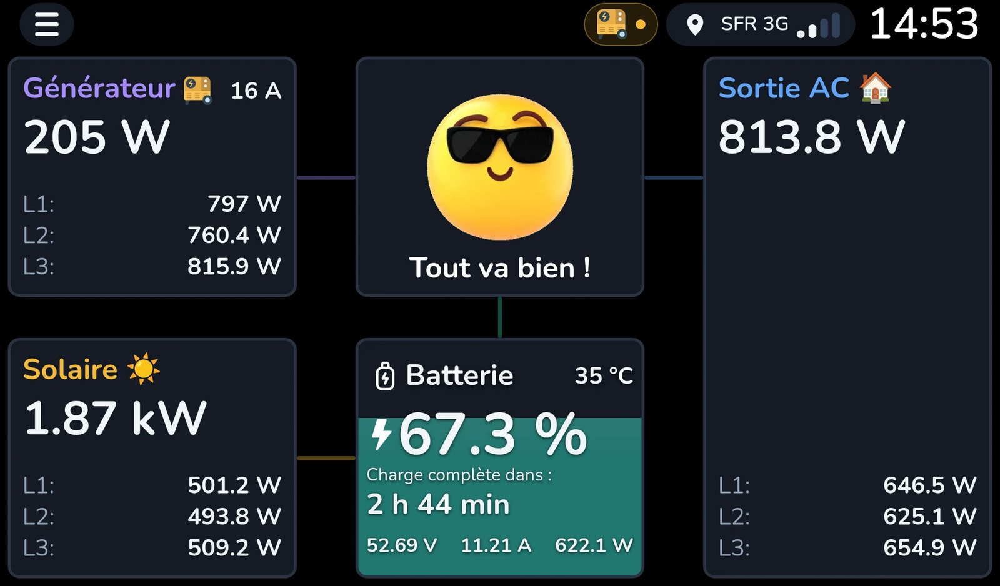
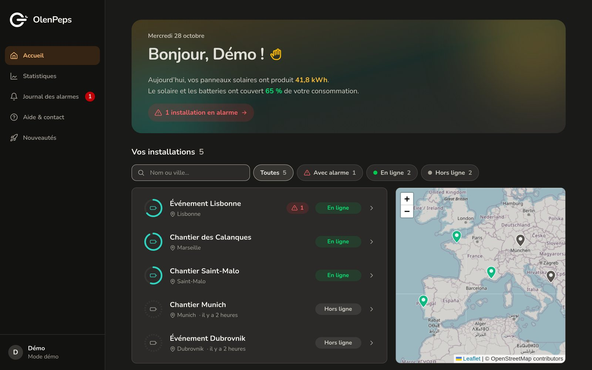
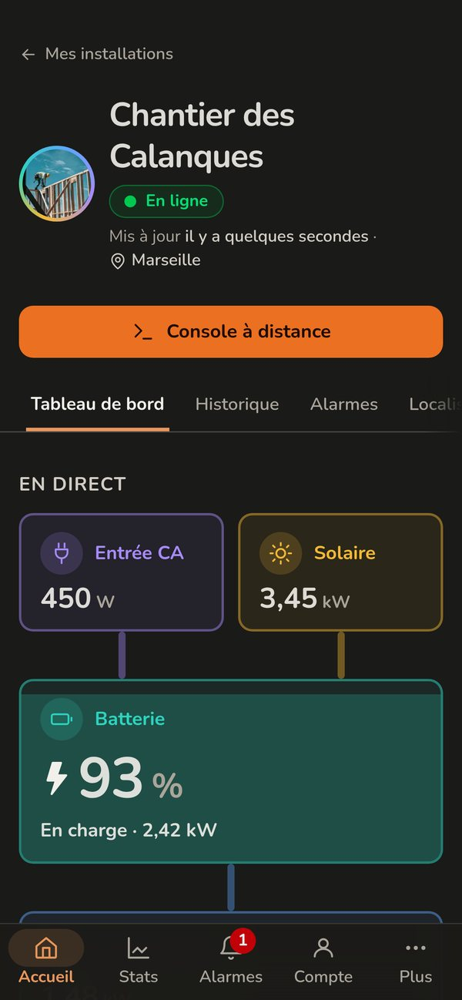
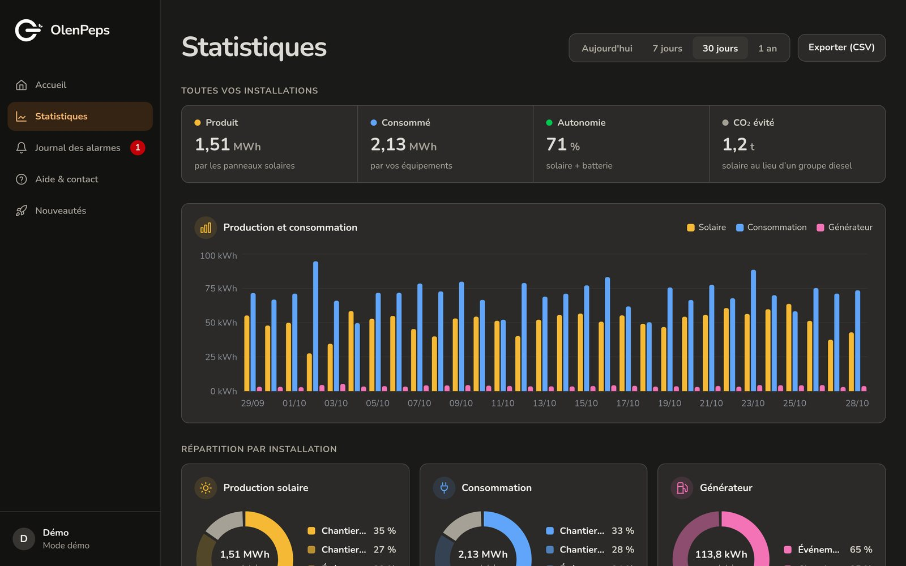
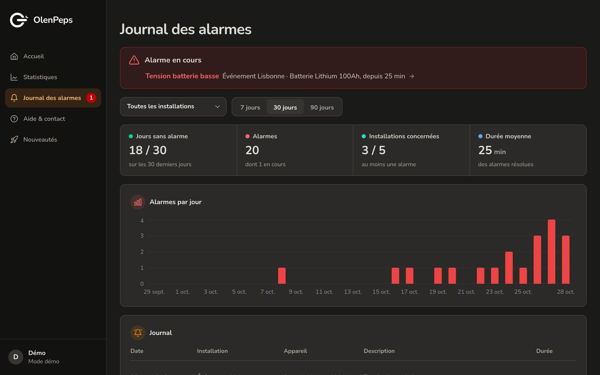

OlenPeps
Lets businesses follow their solar and battery installations from anywhere: battery level, solar production and alarms, live on a map. They can even open an installation's own touchscreen from the browser, as if they were standing next to it.
Try the demo ↗
Private code